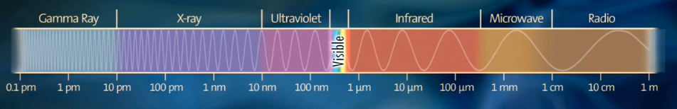

| Spectra Calculations |
Spectra of Gas DischargesColor spectra of elements undergoing electrical discharge excitation. This page shows example spectra for the common elements and uses a Java program originally developed by John Talbot to plot lines for common elements from data available from NIST. |
Acknowledgments - previous pages by Joachim Köppen http://astro.u-strasbg.fr/~koppen/discharge/discharge.html and John Talbot References
|
|
| Below is a representation of the entire electromagnetic spectrum. The region covered by this page is the visible - "human eye" part of the spectrum.

This Java program reads a file containing a list of emission line wavelengths and their corresponding strengths then simulates the appearance of the spectrum in a good visual spectroscope. Note: This program generates deep 24 bit color plots, therefore you may need to increase the color depth of your system to view subtle details in these spectra. Warning: There may be a small delay as the
Applet loads it's element emission line file and computes the spectra...
|
||
|
|
| Atomic Number Z | The number of protons in the nucleus of the element. |
|---|---|
| Element | Click on the name in this column to launch the Applet which displays an emission line spectrum of the corresponding element |
| Symbol | Symbol from the table of the elements |
| Data File | Click on the name to download a text file containing an a list of emission lines in Ångstroms and their associated strengths for the corresponding element |
| Emission Lines | Number of tabulated emission lines in range 3500 - 7500 Å / 350 - 750nm / 0.35 - 0.75 micrometer. Visible wavelength range typically 390 - 750 nm. |
| PNG Image | PNG screen grab (784 X 64). The narrow height is to reduce transmission time, it expands to 64 pixels using HEIGHT=64 option in IMG tag of HTML file. To use images outside the context of a web browser, you should expand them vertically with image processor. |